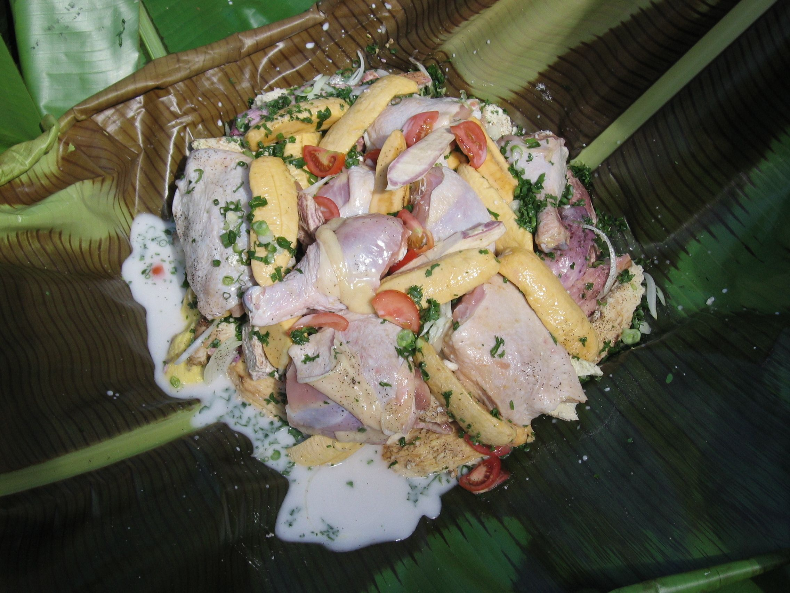

le Bougna
Un plat ancestral

Ingrédients
- 1 poulet entier
- 2 patates douces orange
- 2 patates douces mauve
- 4 manioc
- 4 bananes mures
- 4 ignames
- 4 tomates rouges mures moyenne
- 4 boîtes de lait de coco (400ml)
- 2 céleri moyens
- 2 oignons
- Sel
- Poivre
- Persil
Préparation
- Eplucher les patates,maniocs,les ignames et les bananes.
- Couper les en rondelles de 4 à 5cm sauf les bananes.
- Couper les bananes en trois morceaux.
- Mettez les dans une grande marmite.
- Mettre le poulet dans la marmitte.
- Couper les celeris en rondelles ainsi que les tomates,et les oignons.
- les rajouter dans la marmitte.
- Ensuite les baigner avec le lait de coco.
- (si pas assez de lait de coco,vous pouvez rajouter un peu d'eau ou du lait)
- Salé et poivré,mettre le persil coupé!
- Laissez mijoter pendant 1h30 a feu moyen.
- Surveillez de temps en temps que les légumes sont cuits comme pour des patates.
- Sortez la marmitte du feu et laissez un peu refroidir.
- Et maintenant servez vous!